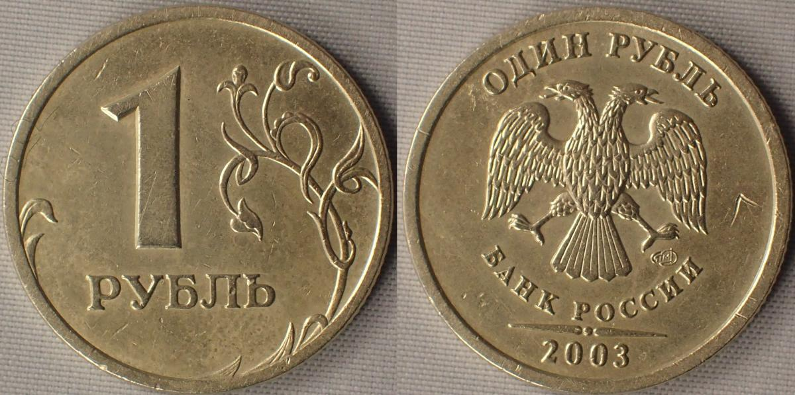

2003

2003 (две ты́сячи тре́тий) год по григорианскому календарю — невисокосный год,
начинающийся в среду. Это 2003 год нашей эры,
3 год 1-го десятилетия XXI века 3-го тысячелетия, 4 год 2000-х годов.
2003 год подарил миру суперзвезду по имени Грета Тунберг
В 2003 году о себе заявил коронавирус — не так громко, как 17 лет спустя,
однако мало не показалось. В самом конце 2002-го вирус передался человеку от циветы,
хищного млекопитающего, заразившегося, в свою очередь, от летучей мыши.
Мясо цивет продается на продовольственных рынках Южного Китая, считается деликатесом…
В начале 2003 года заболевшие исчислялись сотнями, однако об эпидемии власти молчали.
Лечили хворь без шума, чуть ли не подпольно, в перемещениях никого не ограничивали,
в результате чего доктор, имевший дело с носителями, отправился в Гонконг на семейное
торжество… и перезаражал половину отеля, в котором поселился.
Там же, в Гонконге, врач и скончался, перед смертью признавшись,
что имел дело с доселе неизвестным, агрессивным вирусом. К тому моменту контактирующие с ним люди уже разлетелись,
кто в Сингапур, а кто и в Торонто, где тут же случились вспышки SARS —
или атипичной пневмонии, как назвали болезнь.
Пандемии тогда удалось избежать. К лету 2003 года заражения прекратились,
а вирус затаился, чтобы, став еще более коварным и сильным,
снова возникнуть все там же — на китайском рынке и преподать нам очередной урок.
Усвоим ли мы его, так и остается вопросом.
2 июня 2003 года была совершена футбольная сделка года.
За 104 миллиона фунтов стерлингов россиянин Роман Абрамович приобрел лондонский клуб «Челси»
Ну остальное сами бля читайте нате википедию ВОТ ТУТ ЧИТАйТИ
Ну остальное сами бля читайте нате википедию ВОТ ТУТ ЧИТАйТИ